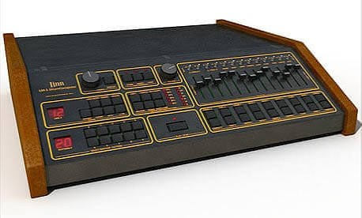

En chiffresBy the numbers
Le nombre d’exemplaires varie selon les sources.Unit counts vary between sources.
L’histoireThe story
- 19781978Roger Linn, guitariste de tournée de Leon Russell et auteur de « Promises » pour Eric Clapton, commence à bricoler une boîte à rythmes pour ses maquettes. Il a 22 ans. Les machines de l’époque, comme la Roland CR-78, ne jouent que des rythmes préprogrammés aux sons synthétiques. Lui veut programmer ses propres parties de batterie.Roger Linn, touring guitarist for Leon Russell and writer of “Promises” for Eric Clapton, starts building a drum machine for his demos. He is 22. Machines of the day, like the Roland CR-78, only play preset rhythms with synthetic sounds. He wants to program his own drum parts.
- L’idéeThe ideaSteve Porcaro, claviériste de Toto, lui suggère d’enregistrer de vrais sons de batterie dans des puces électroniques. À la fin des années 70, la mémoire numérique devient enfin assez petite et assez abordable pour ça.Toto keyboardist Steve Porcaro suggests recording real drums onto computer chips. By the late 1970s, digital memory has finally become small and cheap enough to do it.
- Le batteurThe drummerLes sons sont joués par Art Wood, batteur de studio de Los Angeles et vieil ami de Linn. En 2017, Linn a mis fin aux rumeurs : ce ne sont ni Steve Gadd, ni Jeff Porcaro, ni Dave Garibaldi.The sounds are played by Art Wood, a Los Angeles session drummer and an old friend of Linn’s. In 2017 Linn put the rumours to rest: it was not Steve Gadd, Jeff Porcaro or Dave Garibaldi.
- 19791979Leon Russell sort Life and Love. Linn y joue de la guitare, le coproduit et programme toutes les batteries sur son prototype : il n’y a aucun batteur sur le disque. C’est aussi Russell qui le convainc d’ajouter les claquements de mains et lui apprend le « shuffle ».Leon Russell releases Life and Love. Linn plays guitar, co-produces and programs all the drums on his prototype: there is no drummer on the record. Russell is also the one who convinces him to add handclaps and teaches him about “shuffle”.
- Le prototypeThe prototypeL’électronique tient dans un carton. Linn l’emmène aux soirées de Hollywood. Les musiciens n’en reviennent pas d’entendre une vraie caisse claire en appuyant sur un bouton. Peter Gabriel, des membres de Fleetwood Mac et Stevie Wonder versent chacun un acompte de 2 500 $, la moitié du prix.The electronics sit in a cardboard box. Linn takes it to Hollywood parties. Musicians can’t believe they hear a real snare drum at the push of a button. Peter Gabriel, members of Fleetwood Mac and Stevie Wonder each put down a $2,500 deposit, half the price.
- Le financementThe moneyLinn emprunte 20 000 $ à son père. Quand l’argent manque, il paie le concepteur des circuits imprimés avec sa Porsche de 12 ans. La société s’appelle d’abord Linn et Moffett, du nom d’un investisseur : LM-1, c’est « Linn/Moffett 1 ».Linn borrows $20,000 from his father. When the money runs out, he pays the circuit board designer with his 12-year-old Porsche. The company is first called Linn and Moffett, after an investor: LM-1 stands for “Linn/Moffett 1”.
- 19801980La LM-1 Drum Computer sort à 4 995 $. Les 35 premiers exemplaires sont assemblés chez Linn, puis la société 360 Systems de Bob Easton prend la fabrication en main. En septembre, Mr. Hands de Herbie Hancock est peut-être le premier disque du commerce à l’utiliser.The LM-1 Drum Computer ships at $4,995. The first 35 units are assembled in Linn’s home, then Bob Easton’s company 360 Systems takes over manufacturing. In September, Herbie Hancock’s Mr. Hands may be the first commercial record to use it.
- 1981–19821981–1982« Don’t You Want Me » de The Human League est le premier titre à la LM-1 n°1 au Royaume-Uni, fin 1981, puis n°1 aux États-Unis pendant quatre semaines en juillet 1982.The Human League’s “Don’t You Want Me” becomes the first LM-1 track to hit No. 1 in the UK, in late 1981, then No. 1 in the US for four weeks in July 1982.
- 1982–19831982–1983La LinnDrum arrive, avec des cymbales et un prix de 2 995 $. La LM-1 est arrêtée, après être passée de 5 500 $ à 3 995 $.The LinnDrum arrives, with cymbals and a $2,995 price. The LM-1 is discontinued, after going from $5,500 down to $3,995.
Sous le capotUnder the hood
Pour les curieux et les producteurs : comment une machine de 1980 sonne encore sur des disques d’aujourd’hui.For the curious and for producers: how a 1980 machine still sounds on today’s records.

Des sons enregistrés, pas synthétisésRecorded sounds, not synthesized
Avant la LM-1, les boîtes à rythmes fabriquaient leurs sons avec des circuits analogiques : des bruits filtrés qui rappellent vaguement une batterie. Roger Linn voulait une machine qui « ne sonne pas comme des criquets ». Sa solution : enregistrer de vrais fûts, puis stocker ces enregistrements sous forme numérique dans des puces mémoire (EPROM).Before the LM-1, drum machines built their sounds from analog circuits: filtered noise that vaguely resembled drums. Roger Linn wanted a machine that “didn’t sound like crickets”. His answer: record real drums, then store those recordings digitally on memory chips (EPROMs).
Chaque son est codé sur 8 bits à 28 kHz. Pour comparer, un CD, c’est 16 bits à 44,1 kHz. À la lecture, un convertisseur transforme les nombres en signal audio. Le processeur central, un Zilog Z80, lit les rythmes en mémoire et déclenche les sons au bon moment.Each sound is stored as 8-bit data at 28 kHz. For comparison, a CD is 16-bit at 44.1 kHz. On playback, a converter turns the numbers back into audio. The main processor, a Zilog Z80, reads the patterns from memory and fires each sound at the right time.
Les 12 sonsThe 12 sounds
Douze instruments, déclinés en 18 sons sur certaines versions grâce aux nuances de la grosse caisse, de la caisse claire et du charleston.Twelve instruments, spread over 18 sounds on some versions thanks to dynamics on kick, snare and hi-hat.
Le grain : un « défaut » devenu signatureThe grit: a “flaw” that became a signature
Roger Linn reconnaît qu’il n’était pas ingénieur du son. Plusieurs échantillons contiennent des fréquences au-dessus de la limite que la fréquence d’échantillonnage peut reproduire (la limite de Nyquist, ici 14 kHz). Résultat : du repliement (aliasing), un léger grésillement métallique dans les aigus. C’est précisément ce « sizzle » que les producteurs adorent. Le site Hollow Sun résume : le circuit n’était pas parfait, mais le son était grand.Roger Linn admits he was no audio engineer. Several samples contain frequencies above what the sample rate can reproduce (the Nyquist limit, here 14 kHz). The result is aliasing, a slight metallic sizzle in the top end. That “sizzle” is exactly what producers love. As Hollow Sun puts it: the circuit design was less than perfect, but the sound was great.
Accorder chaque sonTuning every sound
Chaque son a son propre réglage d’accord. On peut descendre une grosse caisse pour la rendre plus ronde, ou monter une caisse claire pour la rendre plus sèche. La LinnDrum supprimera ce réglage pour la plupart des sons : c’est une des raisons pour lesquelles beaucoup d’utilisateurs ont gardé leur LM-1.Every sound has its own tuning control. You can drop a kick to make it rounder, or raise a snare to make it crisper. The LinnDrum removed this control for most sounds: one of the reasons many users kept their LM-1.
Une table de mixage intégréeA built-in mixer
La LM-1 contient une table de mixage à 13 voies : une par son, plus le métronome. Chaque son a son fader de niveau et un réglage de panoramique (gauche, centre ou droite). Surtout, chaque son a sa propre sortie à l’arrière. En studio, l’ingénieur peut donc envoyer la caisse claire dans une réverbération, compresser la grosse caisse à part, ou faire passer un tom dans une pédale d’effet. Prince le fera avec ses pédales Boss, notamment un flanger sur les toms de « When Doves Cry ».The LM-1 contains a 13-channel mixer: one channel per sound, plus the click. Each sound has its own level fader and a pan setting (left, centre or right). Above all, each sound has its own output on the back panel. In the studio, the engineer can send the snare to a reverb, compress the kick on its own, or run a tom through an effect pedal. Prince did exactly that with his Boss pedals, including a flanger on the toms of “When Doves Cry”.
Jouer en temps réel, corriger automatiquementPlay in real time, fix it automatically
On programme la LM-1 en jouant les boutons en temps réel, comme sur une batterie, pendant que le rythme tourne en boucle. Les 100 mémoires accueillent des rythmes que l’on enchaîne ensuite pour construire un morceau entier.You program the LM-1 by playing its buttons in real time, like a drum kit, while the pattern loops. The 100 memory slots hold patterns that you then chain together to build a whole song.
Problème : personne ne joue parfaitement en rythme. Linn ajoute donc l’« auto-correct », qu’il appelait « timing correct » : la machine ramène chaque coup sur la double croche la plus proche. Les autres l’appelleront plus tard « quantification ». Linn raconte que cette invention-là était un heureux accident.The problem: nobody plays perfectly in time. So Linn added “auto-correct”, which he called “timing correct”: the machine moves each hit to the nearest sixteenth note. Others later called it “quantize”. Linn says that invention was a happy accident.
Synchroniser avec le studioSyncing with the studio
La LM-1 date d’avant le MIDI (1983). Pour la caler sur un magnétophone multipiste, elle enregistre un signal de synchronisation sur une piste de la bande, puis se recale dessus à la lecture (« tape sync » en entrée et en sortie). Les premières versions acceptent aussi une horloge externe et envoient leur propre horloge pour piloter d’autres machines. On ne peut pas, en revanche, déclencher ses sons depuis l’extérieur.The LM-1 predates MIDI (1983). To lock it to a multitrack tape machine, it records a sync signal onto one track of the tape, then follows it on playback (tape sync in and out). Early versions also accept an external clock and send their own clock to drive other machines. Its sounds, however, cannot be triggered from outside.
Le swing : l’invention qui a tout changéSwing: the invention that changed everything
Un batteur ne joue jamais ses doubles croches parfaitement égales. Il « traîne » légèrement une note sur deux, et c’est ce qui fait danser. La LM-1 est la première machine à reproduire ce geste avec son réglage « shuffle ». Linn dit lui-même : le swing, il l’a inventé exprès.A drummer never plays sixteenth notes perfectly evenly. One note in two lags slightly behind, and that is what makes people dance. The LM-1 was the first machine to reproduce that feel with its “shuffle” setting. In Linn’s own words, swing was the invention he made on purpose.
Le principe : la machine retarde une note sur deux (croche ou double croche) d’une quantité réglable. Linn l’exprime en pourcentage : la part du temps occupée par la première note de chaque paire.The principle: the machine delays every other note (eighth or sixteenth) by an adjustable amount. Linn expressed it as a percentage: the share of the time taken by the first note of each pair.
À 50 %, les deux notes sont égales : le rythme est droit. À 66 %, la première note prend les deux tiers du temps : c’est le swing en triolet parfait. Entre les deux, tout un monde. Selon Linn, un groove à 90 BPM paraît plus détendu à 62 % qu’au triolet parfait, et un réglage de 54 % suffit à assouplir un rythme droit sans qu’on entende du swing.At 50%, both notes are equal: the beat is straight. At 66%, the first note takes two thirds of the time: perfect triplet swing. In between lies a whole world. According to Linn, a 90 BPM groove feels looser at 62% than at perfect triplet swing, and 54% loosens up a straight beat without sounding like swing.
Qui l’a utilisée ?Who used it?
Les artistes et les disques connus où l’on entend la LM-1, d’après les sources citées en bas de page. Une mention « selon » signale une source unique.Known artists and records featuring the LM-1, based on the sources listed at the bottom. “According to” flags a single source.
Soul, funk, R&B, discoSoul, funk, R&B, disco
| ArtisteArtist | DisqueRecord | Ce qu’on saitWhat we know |
|---|---|---|
| Leon Russell | Life and Love (1979) | Tout l’album, sur le prototype. Aucun batteur. Linn coproduit et joue de la guitare.Whole album, on the prototype. No drummer. Linn co-produces and plays guitar. |
| Herbie Hancock | Mr. Hands (1980) | Peut-être la première sortie commerciale avec la LM-1 (septembre 1980).Possibly the first commercial release with the LM-1 (September 1980). |
| Herbie Hancock | Magic Windows (1981) | Créditée sur le dernier titre, « The Twilight Clone ».Credited on the closing track, “The Twilight Clone”. |
| Stevie Wonder | — | Un des tout premiers acheteurs ; filmé en train de la programmer par la BBC en 1981.One of the very first buyers; filmed programming it by the BBC in 1981. |
| George Benson | Turn Your Love Around (1981) | Programmée par Jeff Porcaro. Un des premiers tubes à la LM-1.Programmed by Jeff Porcaro. One of the first LM-1 hits. |
| Michael Jackson | Thriller (1982) | Surtout grosse caisse et caisse claire en alternance, selon Linn, qui en attribue le mérite à Quincy Jones. Happy Mag cite « Thriller » et « Wanna Be Startin’ Somethin’ ».Mostly alternating kick and snare, says Linn, who credits Quincy Jones. Happy Mag names “Thriller” and “Wanna Be Startin’ Somethin’”. |
| Donna Summer | Donna Summer (1982) | Album produit par Quincy Jones.Album produced by Quincy Jones. |
| Sylvester | — | Cité parmi les utilisateurs par Wikipedia.Listed among users by Wikipedia. |
| Patrick Cowley | Megatron Man (1981) | Des beats superposés et percutants, sans cymbales.Punchy, layered beats, no cymbals. |
| Mtume | Juicy Fruit (1983) | Le beat de la chanson, 8 semaines n°1 R&B, puis la base de « Juicy » de Biggie.The song’s beat, 8 weeks at No. 1 R&B, then the base of Biggie’s “Juicy”. |
Prince, le maître de la LM-1Prince, the LM-1 master
| ArtisteArtist | DisqueRecord | Ce qu’on saitWhat we know |
|---|---|---|
| Prince | 1999 (1982) | « Little Red Corvette », « 1999 ».“Little Red Corvette”, “1999”. |
| Prince | Purple Rain (1984) | « When Doves Cry » : la LM-1 passée dans des pédales Boss, dont un flanger.“When Doves Cry”: the LM-1 run through Boss pedals, including a flanger. |
| Prince | The Black Album (1987) | Il garde sa LM-1 d’origine sans jamais la mettre à jour ; l’ingénieure Susan Rogers la traite à la réverbération AMS.He kept his original LM-1, never updated; engineer Susan Rogers treated it with AMS reverb. |
Prince l’a utilisée plus que quiconque, et longtemps après la sortie de machines plus modernes. Sa LM-1 est exposée à Paisley Park. Roger Linn dit que Prince a compté énormément pour son succès, mais il ne l’a jamais rencontré.Prince used it more than anyone, long after newer machines came out. His LM-1 is on display at Paisley Park. Roger Linn says Prince mattered enormously to his success, but he never met him.
Pop et rockPop and rock
| ArtisteArtist | DisqueRecord | Ce qu’on saitWhat we know |
|---|---|---|
| The Human League | Dare (1981) | « Don’t You Want Me » : 1er n°1 de la LM-1, au Royaume-Uni (fin 1981) puis aux États-Unis (4 semaines, juillet 1982). Aussi « The Sound of the Crowd ».“Don’t You Want Me”: the LM-1’s first No. 1, UK (late 1981) then US (4 weeks, July 1982). Also “The Sound of the Crowd”. |
| ABC | The Lexicon of Love (1982) | « The Look of Love » et « Poison Arrow ».“The Look of Love” and “Poison Arrow”. |
| Peter Gabriel | Security (1982) | Un des premiers à verser un acompte. « Shock the Monkey ».One of the first to put down a deposit. “Shock the Monkey”. |
| Elton John | Nobody Wins (1981) | Programmée par Jeff Porcaro. Pour Linn, la meilleure utilisation de sa machine.Programmed by Jeff Porcaro. For Linn, the best use of his machine. |
| Fleetwood Mac | — | Des membres du groupe versent un acompte dès le prototype.Band members put down a deposit at the prototype stage. |
| Don Henley | I Can’t Stand Still (1982) | Avec Jeff Porcaro et Steve Lukather de Toto.With Toto’s Jeff Porcaro and Steve Lukather. |
| Queen | Hot Space (1982) | |
| Roxy Music | Avalon (1982) | |
| ABBA | 1981–1982 | Plusieurs titres de la fin.Several late tracks. |
| The Alan Parsons Project | Eye in the Sky (1982) | Puis Ammonia Avenue (1983).Then Ammonia Avenue (1983). |
| Billy Idol | Billy Idol (1982) | |
| Hall & Oates, Huey Lewis, Paul McCartney, Steve Winwood | — | Cités parmi les utilisateurs par Wikipedia.Listed among users by Wikipedia. |
| David Bowie | — | Le Victoria and Albert Museum conserve sa LM-1, numéro de série 00040.The Victoria and Albert Museum holds his LM-1, serial number 00040. |
Synthpop et new waveSynth-pop and new wave
| ArtisteArtist | DisqueRecord | Ce qu’on saitWhat we know |
|---|---|---|
| Gary Numan | Dance (1981) | Puis I, Assassin (1982) et Warriors (1983).Then I, Assassin (1982) and Warriors (1983). |
| Devo | New Traditionalists (1981) | Puis Oh, No! It’s Devo (1982).Then Oh, No! It’s Devo (1982). |
| Heaven 17 | Penthouse and Pavement (1981) | Puis The Luxury Gap (1983).Then The Luxury Gap (1983). |
| Ultravox | Quartet (1982), Lament (1984) | Le batteur Warren Cann l’utilise, toms panoramiqués sur « White China ».Drummer Warren Cann used it, panned toms on “White China”. |
| Tears for Fears | The Hurting (1983) | |
| Men Without Hats | Rhythm of Youth (1982) | |
| Kraftwerk | Electric Café (1986) | |
| Giorgio Moroder | — | Cité par The Guardian parmi les utilisateurs.Named by The Guardian among users. |
| Craig Leon | Nommos (1981) | Caisses claires transformées et sons accordés comme un synthé.Processed snares and pitched sounds used like a synth. |
Cinéma, Australie, JaponFilm, Australia, Japan
| ArtisteArtist | DisqueRecord | Ce qu’on saitWhat we know |
|---|---|---|
| Vangelis | Blade Runner (1982) | La bande originale du film.The film’s soundtrack. |
| John Carpenter & Alan Howarth | Escape from New York (1981) | La musique du film New York 1997.The score of the film. |
| Icehouse | Primitive Man (1982) | « Hey Little Girl », 1er enregistrement australien à la LM-1. Happy Mag cite aussi « Great Southern Land ».“Hey Little Girl”, the first Australian recording with the LM-1. Happy Mag also names “Great Southern Land”. |
| John Farnham | You’re the Voice (1986) | Selon Happy Mag.According to Happy Mag. |
| Yuji Toriyama et Ken Morimura | Aerobics (1982) | Un disque japonais de gym.A Japanese workout record. |
| XTC | The Big Express (1984) |
Elle sonne encoreStill in use
| ArtisteArtist | DisqueRecord | Ce qu’on saitWhat we know |
|---|---|---|
| Justin Timberlake | FutureSex/LoveSounds (2006) | |
| Lady Gaga | The Fame Monster (2009) | |
| The Mystic Jungle Tribe | Plenilunio (2017) |
Lire l’histoire de Juicy Fruit →Read the Juicy Fruit story →
La peur des batteursThe drummers’ fear
À Los Angeles, on a craint que la LM-1 remplace les batteurs de studio. Certains, comme Jeff Porcaro, ont pris les devants : ils ont acheté la machine et proposé leurs services de programmeurs. Linn le souligne volontiers : la meilleure utilisation de la LM-1, selon lui, c’est la programmation de Porcaro sur « Nobody Wins » d’Elton John, si réussie que peu de gens savent que c’est une machine.In Los Angeles, people feared the LM-1 would replace session drummers. Some, like Jeff Porcaro, got ahead of it: they bought the machine and offered their services as programmers. Linn likes to point out that in his view the best use of the LM-1 is Porcaro’s programming on Elton John’s “Nobody Wins”, so good that few people know it’s a machine.
Linn, lui, reste modeste : il répète qu’il n’a pas inventé la boîte à rythmes, il l’a seulement rendue meilleure, avec les sons échantillonnés, la programmation en temps réel, la quantification et le swing.Linn himself stays modest: he keeps saying he didn’t invent the drum machine, he just made it better, with sampled sounds, real-time programming, quantize and swing.
L’héritageLegacy
Avec la Roland TR-808, sortie à la même période, la LM-1 a fait passer la boîte à rythmes du statut de jouet à celui d’instrument sérieux. Elle était hors de prix et rare, mais elle a fixé les règles : de vrais sons, des sorties séparées, une programmation en temps réel, la quantification et le swing.Together with the Roland TR-808, released around the same time, the LM-1 turned the drum machine from a toy into a serious instrument. It was expensive and rare, but it set the rules: real sounds, separate outputs, real-time programming, quantize and swing.
Roger Linn enchaîne avec la LinnDrum (1982), qui se vend bien plus, puis la Linn 9000 (1984). Linn Electronics ferme en 1986. Il conçoit ensuite pour Akai la MPC60 (1988), où l’on retrouve le même swing. La MPC deviendra l’outil de base du hip-hop, la musique même qui a samplé les disques soul et funk joués sur sa LM-1.Roger Linn followed with the LinnDrum (1982), which sold far more, then the Linn 9000 (1984). Linn Electronics closed in 1986. He then designed the MPC60 (1988) for Akai, with the same swing. The MPC became the core tool of hip-hop, the very music that sampled the soul and funk records played on his LM-1.
En 2023, la Luma-1 de Joe Britt reconstruit fidèlement la LM-1 en y ajoutant MIDI, USB et des sons téléchargeables. Plus de quarante ans après, le grain 8 bits de la machine d’Art Wood et de Roger Linn reste recherché.In 2023, Joe Britt’s Luma-1 faithfully rebuilt the LM-1, adding MIDI, USB and downloadable sounds. More than forty years on, the 8-bit grit of Art Wood and Roger Linn’s machine is still in demand.
LM-1 contre LinnDrumLM-1 vs LinnDrum
| LM-1 (1980) | LinnDrum (1982) | |
|---|---|---|
| PrixPrice | 4 995 $ → 3 995 $ | 2 995 $ |
| ÉchantillonsSamples | 8 bits, 28 kHz8-bit, 28 kHz | 8 bits, 28 à 35 kHz8-bit, 28–35 kHz |
| CymbalesCymbals | NonNo | OuiYes |
| Accord par sonPer-sound tuning | Tous les sonsEvery sound | Caisse claire, toms, congas seulementSnare, toms, congas only |
| ExemplairesUnits | 500–725 | environ 5 000about 5,000 |
Fiche techniqueSpec sheet
- FabricantManufacturer
- Linn Electronics (d’abord Linn and Moffett)Linn Electronics (first Linn and Moffett)
- ConceptionDesigner
- Roger LinnRoger Linn
- AnnéesYears
- 1980–19831980–1983
- PrixPrice
- 4 995 $, puis 5 500 $, 4 995 $ et 3 995 $$4,995, then $5,500, $4,995 and $3,995
- SonsSounds
- 12 instruments échantillonnés, jusqu’à 18 sons12 sampled instruments, up to 18 sounds
- ÉchantillonsSamples
- 8 bits, 28 kHz, sur EPROM, joués par Art Wood8-bit, 28 kHz, on EPROM, played by Art Wood
- ProcesseurProcessor
- Zilog Z80Zilog Z80
- PolyphoniePolyphony
- 10 voix (Rev. 1), 9 voix (Rev. 2 et 3)10 voices (Rev. 1), 9 voices (Rev. 2 and 3)
- MémoireMemory
- 100 rythmes, enchaînables en morceaux100 patterns, chainable into songs
- Réglages par sonPer-sound controls
- Niveau, panoramique, accordLevel, pan, tuning
- MixageMixer
- 13 voies, une sortie séparée par son13 channels, one separate output per sound
- TimingTiming
- Auto-correct (quantification) et shuffle (swing)Auto-correct (quantize) and shuffle (swing)
- SynchroSync
- Tape sync in/out, horloge externe (Rev. 1 et 2)Tape sync in/out, external clock (Rev. 1 and 2)
- MIDIMIDI
- Non (antérieure au MIDI)No (predates MIDI)
- ExemplairesUnits
- Entre 500 et 725 selon les sourcesBetween 500 and 725 depending on sources
Les trois versionsThe three revisions
| VersionRevision | Ce qui changeWhat changes |
|---|---|
| Rev. 1 | Boutons gravés avec le symbole de chaque instrument, 10 voix de polyphonie, pas de voyants pour le shuffle ni l’auto-correct. Les 10 tout premiers exemplaires n’ont pas de numéro de série et portent la mention « Linn and Moffett Electronics ».Buttons engraved with each instrument’s symbol, 10-voice polyphony, no LEDs for shuffle or auto-correct. The first 10 units have no serial number and read “Linn and Moffett Electronics”. |
| Rev. 2 | Deux rangées de voyants pour le shuffle et l’auto-correct, boutons de programmation en plus, un filtre commun sur grosse caisse, toms et congas, 9 voix.Two rows of LEDs for shuffle and auto-correct, extra programming buttons, a shared filter on kick, toms and congas, 9 voices. |
| Rev. 3 | Version économique : plus d’entrée d’horloge externe, plus de sorties stéréo à bas niveau, plus d’interrupteur de protection de la mémoire, bouton PLAY/STOP plus petit.Cost-cut version: no external clock input, no low-level stereo outputs, no memory-protect switch, smaller PLAY/STOP button. |
Sur nos réseauxOn our socials
Chaque semaine, un disque et son histoire en vidéo.Every week, a record and its story on video.
Sources : Wikipedia, Linn LM-1 · Wikipedia, LinnDrum · Reverb, interview de Roger Linn (2017) · Reverb, Prince et la LM-1 · MIDI Association, Roger Linn · Attack Magazine, Roger Linn sur le swing · Attack Magazine, le swing des boîtes à rythmes · DJ Mag, Happy Accidents · Mix, Roger Linn · Songfacts, interview de Roger Linn · AudioTechnology, interview de Roger Linn · The Vinyl Factory, la LM-1 en 10 disques · Red Bull Music Academy, MPC60 · Hollow Sun, LM-1 · The Guardian, Hey, what's that sound: Linn LM-1 · MusicRadar, Synth icons: Linn LM-1 · Happy Mag, drum machines · V&A, la LM-1 de David Bowie · Wikipedia, Roger Linn
Photos de la LM-1 : collection de l’auteur du site.LM-1 photos: site owner’s collection.